10 Sporenkappen met flieringen op dubbele schaargebinten
10.1 Sporenkappen met flieringen op dubbele schaargebinten en met een hanenbalk
10.1.1 Damme, Sint-Janshospitaal, ziekenzaal
De 31,6 m lange en 14,3 m brede zolder van de ziekenzaal is overdekt met een imposante sporenkap van 57 sporenparen1. De sporen staan hart op hart gemiddeld 75 cm uiteen en bestaan uit twee stukken. Boven de onderste fliering hebben de sporen een doorsnede van 20 op 20 cm, onder de fliering bedraagt de sectie 15 op 15 cm. Mogelijk is dit het gevolg van een herstelling of aanpassing. Op de gebinten zijn klossen aangebracht die een gording dragen waarop het onderste gedeelte van de sporen rust. Deze gording behoort waarschijnlijk niet tot de oorspronkelijke opstelling2. Alle houtverbindingen in de kap zijn van het pen-en-gat type, met als enige uitzondering de bovenkant van de standzonen die in een inkeping in de sporen is geschoven en met een toognagel vastgezet.
Op de twee meter hoge borstwering liggen dubbele muurplaten met blokkelen waarin de voeten van de sporen en de standzonen zijn vastgemaakt. Elk spoor rust op twee flieringen die telkens door een schaar- of kromstijlgebinte worden gedragen. Opmerkelijk is dat elk spoor met een klein blokkeel op deze flieringen is vastgezet. De onderste fliering wordt gedragen door acht hoge kromstijlgebinten en, tegen de achtergevel, door een later gewijzigd stijlgebint op consoles in Doornikse kalksteen. De bovenste fliering rust op zeven schaargebinten en, tegen de voor- en achtergevel, op stijlgebinten op consoles. Enkel op de kromstijlgebinten werden telmerken waargenomen. De nummering verloopt van achter- naar voorgevel, waarbij echter nummer III ontbreekt en het gebint tegen de voorgevel opnieuw nummer I draagt.
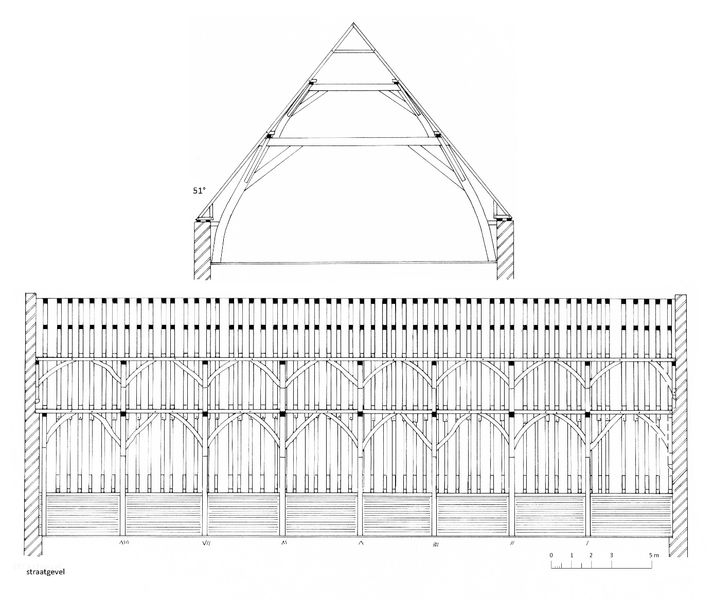
Met zes van de elf boorkernen uit de eikenhouten kap kon een middelcurve berekend worden die bij vergelijking met referentiekalenders een betrouwbaar resultaat leverde. De jongste gemeten jaarring dateert uit 1268d. Het vellen van het hout moet tussen 1270 en 1285d worden gesitueerd3.
10.1.2 Vlamingstraat 35, huis Ter Buerse, hoofdgebouw
Het laat 13de-eeuwse huis Ten Buerse werd in 1453 (cfr. in 1947 verplaatste gevelsteen) grondig verbouwd4. Door latere verbouwingen bleef van het oorspronkelijke interieur weinig bewaard, met uitzondering van de sporenkap.
De hanenbalken zijn halfhouts verbonden met de sporenparen die rusten op flieringen op dubbele gebinten. Tegen de voorgevel bevindt zich een dubbel stijlgebinte, waarin tussen stijlen en dekbalk geen korbelen zijn aangebracht maar wel schoren tussen de buitenzijde van de stijlen en de onderliggende balk. Verder zijn er vier dubbele schaargebinten.In de gebinten zijn alle verbindingen van het pen-en-gat type en met houten pennen vastgezet, met uitzondering van de opgenagelde verbinding tussen stijlen en schoren. Alle gebinten en daksporen zijn voorzien van telmerken.
10.1.3 Sint-Jakobskerk, schip
Boven het 10,3 m brede en 28,4 m lange schip, dat pas in de tweede helft van de 17de eeuw met stenen gewelven werd overdekt, zijn vier trekbalken aangebracht waarvan de uiteinden door korbeelstellen zijn verstijfd5. Op drie van de vier trekbalken staan dubbele schaargebinten terwijl tegen de westgevel dubbele stijlgebinten (of standjukken) zijn opgesteld. Dit is eveneens het geval tegen de grotendeels verdwenen oostgevel waar de stijlgebinten echter op consoles staan. Zowel in de schaar- als in de stijlgebinten zijn alle verbindingen van het pen-en-gat type.
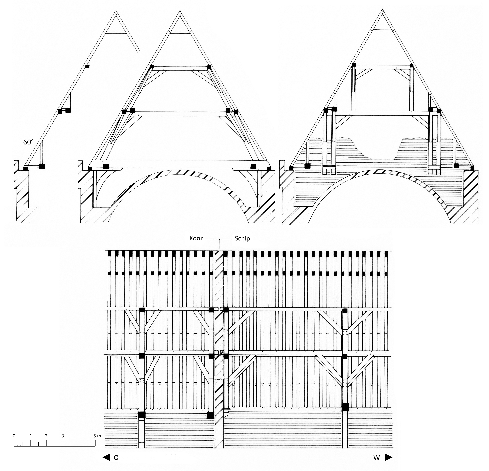
De voeten van de daksporen zijn met pen-en-gat verbindingen vastgezet in blokkelen die rusten op een enkele muurplaat en een zware raveelbalk die tussen de trekbalken is ingesloten. Op de raveelbalk staan standzonen waarvan de voet met een pen-en-gat verbinding is geborgen terwijl de top tegen het dakspoor is vastgezet met een houten toognagel.
Op de uiteinden van de dekbalken van de onderste gebinten liggen telkens twee geschoorde flieringbalken. Tegen de verdwenen oostmuur is de schoor van de binnenste flieringbalk vastgemaakt in een bijkomende stijl. Het stijlgebinte bestaat hier dus uit een dekbalk op twee paar stijlen. Op de buitenste fliering ligt per sporenpaar een blokkeel dat zelf is ingelaten in de binnenste fliering. Op het blokkeel staan standzonen die zowel boven- als onderaan met een pen-en-gat verbinding zijn geborgen. Ook de hanenbalk nabij de nok is met pen-en-gat verbindingen in de daksporen vastgemaakt.
De dakkap van het schip dateert waarschijnlijk uit de 15de eeuw en behoort tot een verbouwing, mogelijk tussen 1457 en 1468, van het oudere schip uit, wellicht, de 14de eeuw6.
10.1.4 Sint-Jakobskerk, middenkoor
Boven het 10, 5 m brede en 26 m lange middenkoor zijn zes trekbalken aangebracht die door korbeelstellen zijn verstijfd. Zoals in het schip bestaat de kap uit dubbele schaargebinten op trekbalken en, tegen de (verdwenen) oostmuur van het schip, dubbele stijlgebinten. Deze dakkap is nagenoeg identiek aan de kap van het schip. Belangrijk verschil evenwel is dat de binnenste flieringbalk hier niet geschoord is. De daksporen hebben een doorsnede van 16-20 x 12 cm en staan hart op hart 40 tot 45 cm uiteen. Zoals in het schip werden er geen telmerken waargenomen.
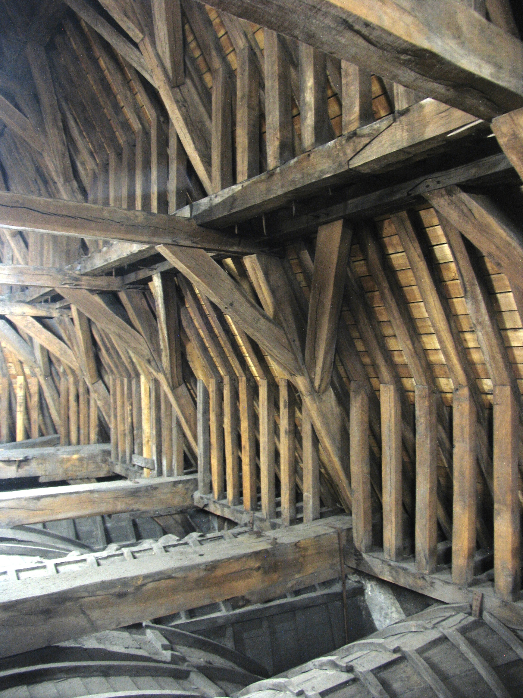
De kap van het middenkoor is waarschijnlijk gelijktijdig opgetrokken met de kap van de middenbeuk, in de 15de eeuw7.
10.1.5 Jan van Eyckplein 2, Tolhuis
De oorsprong van het Tolhuis is een vroeg 13de-eeuws koopmanshuis dat vanaf 1305 dienst deed als de Grote Tol, waar belasting werd geheven op producten die in Brugge werden ingevoerd8. Een belangrijke verbouwing werd uitgevoerd door Pieter van Luxemburg, eigenaar van het gebouw vanaf 14709.
De huidige gordingenkap met gestapelde schaargebinten en nokgebinten dateert waarschijnlijk uit de late 16de of vroege 17de eeuw. Veel onderdelen zijn echter afkomstig uit een oudere sporenkap. Zowel het bouwhistorisch als het dendrochronologisch onderzoek hebben aangetoond dat er twee bouwfasen aanwezig zijn, waarbij eerst in het voorhuis en iets later in het achterhuis werd ingegrepen.
Voorhuis
Tot de eerste bouwfase behoren de gestapelde stijlgebinten tegen de straatgevel en twee gestapelde schaargebinten. De oorspronkelijke sporen met hanenbalken verdwenen bij latere verbouwingen. Alhoewel bij de nieuwe opstelling enkele stukken zijn verplaatst, is toch duidelijk dat de getrokken telmerken behoren tot een omlopende nummering. Het eerste gebint draagt rechts het nummer 1 en links het nummer 6. Het tweede gebint draagt rechts het nummer 2 en links het nummer 5. Het derde gebint ten slotte draagt de nummers 3 en 4. Opvallend is dat de linkse nummers 4, 5 en 6 zijn voorzien van een onderscheidingsstreepje. Deze nummering maakt duidelijk dat de drie gestapelde gebinten achter de voorgevel tot één bouwfase behoren en dat in eerste instantie enkel het voorhuis werd verbouwd. Hierbij kreeg het gebouw een nieuwe natuurstenen schermgevel.
Het eikenhout in deze kap vertoont zonder uitzondering een zeer snelle groei en veel verstoringen, waardoor een rigoureuze selectie noodzakelijk was van stalen voor dendrochronologisch onderzoek. Van de vijf boorkeren hebben er twee en sterk gelijkaardig groeiringpatroon. Deze twee werden samengevoegd tot één middelcurve, die een betrouwbare datering gaf bij de vergelijking met referentiekalenders. De jongste gemeten jaarring dateert uit 1457d. De veldatum van het hout kan daardoor gesitueerd worden tussen 1458 en 1478d10.
Achterhuis
In tegenstelling tot het voorhuis werden in de dakkap van het achterhuis zijn slechts enkele houtstukken, voornamelijk dekbalken en spantbenen, afkomstig uit een oudere kap. Alle andere stukken (korbelen, schoren en nokgebinten) en telmerken behoren tot de latere gordingenkap. Constructief was de voorganger van de gordingenkap waarschijnlijk identiek aan deze van het voorhuis.
Het groeiringpatroon van twee van de drie genomen boorkernen vormen samen één middelcurve. De jongste gemeten jaarring kon gedateerd worden in 1476d. De veldatum van het hout moet waarschijnlijk tussen 1477 en 1491d gesitueerd worden11.
10.1.6 Onze-Lieve-Vrouwekerk, zuidbeuk, westelijk deel
De 16,6 m lange en 8,2 m brede sporenkap werd waarschijnlijk opgetrokken na de bouw van het zuidportaal in 1464, grotendeels ter vervanging van de oudere sporenkap met hanenbalkfliering en makelaars12. De daksporen hebben een doorsnede van 10-13 x 13 cm en bestaan uit twee delen. De las bevindt zich ter hoogte van de onderste flieringen. De naaldhouten hanenbalken zijn halfhouts verbonden met de sporen.
De flieringen rusten op vijf gestapelde schaargebinten en een gestapeld stijlgebinte tegen de westgevel. Bij de onderste, vrij zware gebinten zijn de verbindingen tussen de stijlen, de dekbalken en de korbelen telkens van het pen-en-gat type. De schoren daarentegen zijn opgenageld. Bij de lichter uitgevoerde bovenste gebinten zijn alle verbindingen genageld.
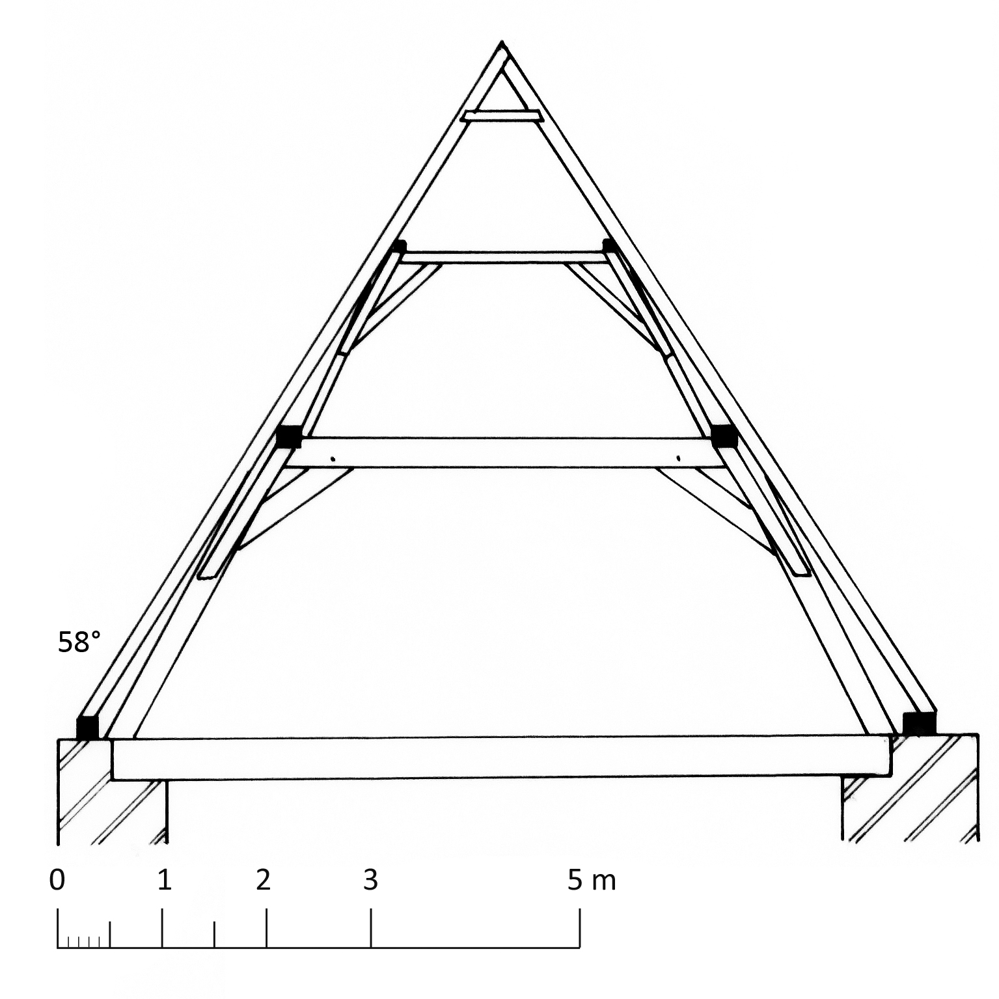
Het snel gegroeide eikenhout bevat brede en dus weinig jaarringen. Drie stalen met voldoende jaarringen (60 tot 100) leverden echter geen datering op13. De bouw van het zuidportaal in 1464 levert evenwel een terminus post quem voor de oprichting van deze kap.
10.1.7 Peperstraat 3, huis Adornes, hoofdvleugel
In het noorden van de stad bouwde de adellijke familie Adornes in de 15de eeuw een groot domein uit dat naast de private Jeruzalemkerk ook een woonhuis, galerijen en godshuizen omvatte14. De hoofdvleugel van het woonhuis wordt overdekt door een volledig in oorspronkelijke staat bewaarde sporenkap op gestapelde gebinten. De daksporen hebben een doorsnede 8 x 9 cm tot 8,5 x 10 cm. De hanenbalken zijn met een pen-en-gatverbinding in de daksporen vastgezet. Op de zes moerbalken van de eerste verdieping staan dubbele schaargebinten terwijl tegen de eindgevels dubbele stijlgebinten staan opgesteld. Alle verbindingen in de gebinten zijn van het pen-en-gat type, met uitzondering van de opgenagelde top van de bovenste schoren. De telmerken in de kap verlopen van zuid naar noord en bestaan aan de westzijde uit gebeitelde streepjes, aan de andere zijde uit gaatjes. De westelijke schoren van het eerste tot en met derde (onderste) schaargebinte hebben een eigen nummering van 1 tot 6.
De dekbalken van het vierde en zesde onderste schaargebinte zijn samengesteld uit hergebruikt hout, zoals blijkt uit oudere getrokken telmerken en dichtgemaakte pengaten voor oudere korbelen. Bovenaan de dekbalken van het tweede en derde onderste schaargebinte bevindt zich een halfronde inkeping waarin ooit een windas stak. Dit stemt overeen met inkepingen in de dekbalk voor drie kinderbalken van een kleine houten vliering en een luikopening in de zoldervloer.
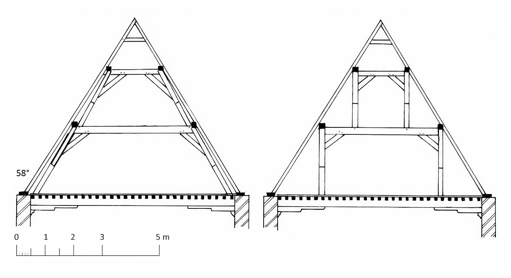
Van de acht boorkernen leverden er slechts twee een middelcurve met einddatering in 1325d. Na toevoeging van het minimaal aantal spintringen kan gesteld worden dat de vroegst mogelijke veldatum zeker na 1333d moet worden gesitueerd15. Aangenomen wordt dat de hoofdvleugel werd gebouwd door Anselm Adornes omstreeks 1469, dus meer dan 130 jaar later16. De dendrochronologische datering bevestigt wat reeds bleek bij het bouwhistorisch onderzoek, namelijk dat bij de bouw hout uit een oudere kap werd gebruikt.
10.1.8 Oost-Gistelhof 2, huis Den Bonten Hont
De oudste kern (ca. 1300) van dit complexe huis is een zuidelijk diephuis langs de Gouden Handrei dat omstreeks 1500 werd verbouwd en uitgebreid17. Van de toen opgetrokken sporenkap zijn de gestapelde schaargebinten bewaard. Uitzonderlijk is dat de dekbalk van de onderste schaargebinten voorzien is van balksleutels met een kwartrond profiel.
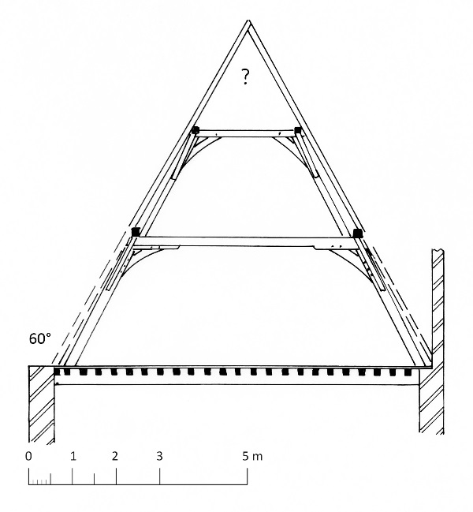
10.1.9 Markt 15, huis De Boechoute
De zeer goed bewaarde sporenkap van dit kleine diephuis is waarschijnlijk in twee fasen tot stand gekomen. Het onderste en waarschijnlijk oudste gedeelte van de kap bestaat achtereenvolgens uit een stijlgebinte tegen de voorgevel, drie vrijstaande schaargebinten en een schaargebinte tegen de achtergevel. In deze zware eikenhouten gebinten zijn alle verbindingen van het pen-en-gat-type. De gebinten dragen geen telmerken.
Enkel op de drie vrijstaande schaargebinten staan aanzienlijk lichter uitgevoerde schaargebinten waarvan alle verbindingen genageld zijn. Tot dezelfde fase behoren de daksporen die telkens door halfhouts verbonden en getelmerkte hanenbalken verbonden zijn. De eikenhouten daksporen hebben een doorsnede van 10 x 10 cm en staan hart op hart 35 tot 40 cm uiteen. De dakhelling bedraagt 62°.
10.1.10 Simon Stevinplein 11
Het oorspronkelijke huis uit het begin van de 14de eeuw (bakstenen van 27 x 6,5 cm groot) werd grondig verbouwd in de vroege 16de eeuw18. Een brandmuur verdeelt het pand in een rechthoekig voorhuis en een nagenoeg vierkant achterhuis. De 16de-eeuwse sporenkappen in beide huisdelen zijn zeer gaaf bewaard. De kap in het voorhuis telde oorspronkelijk waarschijnlijk 24 sporenparen, heden nog 22 na de afbraak in 1707 van een houten gevel met overkragingen. De kap in het achterhuis telt 14 sporenparen. De getrokken telmerken verlopen telkens van achter- naar voorgevel. De halfhoutse verbindingen van de hanenbalken met de sporen zijn telkens door twee smeedijzeren nagels vastgezet. De sporenkap rust aan elke zijde op twee flieringen die ondersteund worden door twee schaargebinten in het voorhuis, een schaargebinte in het achterhuis en stijlgebinten aan beide zijden van de brandmuur.
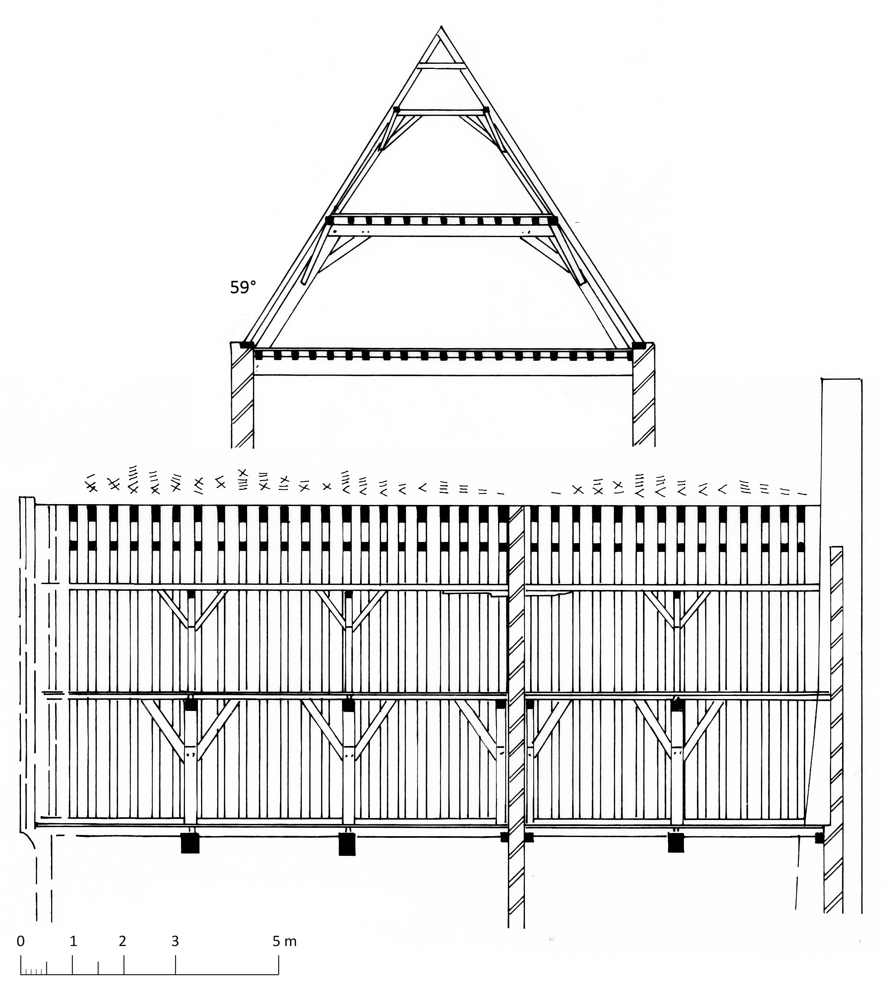
Op de vlieringzolder worden de flieringen verstevigd door eenvoudige balksleutels. De onderste schaar- en stijlgebinten hebben een eigen nummering die in één reeks doorloopt van achter- naar voorgevel. Opvallend hierbij is dat de getrokken telmerken, in tegenstelling tot die op de hanenbalken, nog nauwelijks zichtbaar zijn. Waarschijnlijk zijn de schaargebinten uit een oudere dakkap afkomstig en werden de onderdelen bijgewerkt voor de nieuwe opstelling. De uiteinden van de korbelen en de onderkant van de schoren zijn met een pen-en-gat verbinding vastgezet. De bovenkant van de schoren is opgenageld. Op de dekbalken liggen de kinderbalken van de vlieringzolder. De bovenste schaargebinten zijn zonder telmerken. Alle verbindingen zijn er koud opgenageld. Mogelijk zijn deze schaargebinten een latere toevoeging.
Uit de onderste gebinten werden vijf boorkernen genomen voor dendrochronologisch onderzoek. Het eikenhout bleek snel gegroeid te zijn, waardoor slechts korte groeiringreeksen konden opgemeten worden. Dit leverde uiteindelijk geen betrouwbare datering op19. De formaten van de bakstenen (20 x 4,5 cm groot) laten toe om het verbouwde huis niet vroeger te dateren dan ca. 1340.
10.1.11 Twijnstraat 6-8
De kern van dit imposant 19de-eeuws herenhuis is een middeleeuws huis, waarschijnlijk rond 1300 opgericht en gelegen op de hoek van de Twijnstraat en de Kelkstraat20. Hiervan bleven enkel in de kelder resten zichtbaar. Het huis bezit een rechthoekig voorhuis en een vierkant achterhuis. Boven het voorhuis is een sporenkap op vier dubbele schaargebinten bewaard. De gebinten tegen de straatgevel en de (verdwenen) brandmuur zijn niet bewaard gebleven. Zij verdwenen waarschijnlijk tijdens een verbouwing in de vroege 19de eeuw, toen een trapgevel en een puntgevel verbouwd werden tot een lijstgevel21. De onderste gebinten bestaan gedeeltelijk uit hergebruikt hout en dragen zowel getrokken als gebeitelde telmerken. Alle verbindingen zijn van het pen-en-gat type. De bovenste gebinten bestaan uit onderdelen met een lichtere sectie, alle opgenageld met smeedijzeren nagels. De daksporen, met telmerken aan de kant van de Twijnstraat, zijn paarsgewijs verbonden door dicht bij de nok aangebrachte en halfhouts verbonden hanenbalken.
De kap dateert waarschijnlijk uit de 15de tot vroege 16de eeuw.
10.1.12 Grauwwerkersstraat 6
De bestaande kap kwam ongetwijfeld tot stand door de verbouwing van een oudere kap waarin elk sporenpaar door twee hanenbalken was verbonden (zie ook 12.7)22. Bij de verbouwing verdwenen de onderste hanenbalken en werden zeer lichte gestapelde schaargebinten ingebracht, telkens op de drie moerbalken van de onderliggende verdieping geplaatst. Tegen de eindgevels bevinden zich geen gebinten. Alle verbindingen in deze gebinten zijn genageld. De kap telt heden 25 sporenparen die hart op hart gemiddeld 45 cm uiteen staan.
De verbouwing van de kap gebeurde waarschijnlijk in de 15de of vroege 16de eeuw.
10.1.13 Sint-Salvatorskathedraal, sacristie
De kap van de sacristie ontsnapte aan de brand van 183923. De kap bestaat uit twee spanten, telkens samengesteld uit twee gestapelde schaargebinten. Luc Devliegher dateert deze kap op het einde van de 15de eeuw24.
10.1.14 Boomgaardstraat 7, huis De Candelaer
Dit diephuis met een laatgotische trapgevel van omstreeks 1500 bevat een sporenkap met flieringen op dubbele schaargebinten25. De dekbalken van de onderste schaargebinten worden gedragen door kromstijlen. De bovenste schaargebinten hebben daarentegen rechte spantbenen. De gespannen zijn bovenaan verstevigd met een kleine hanenbalk. Het huis bewaart een oorspronkelijke dwarsmuur die doorloopt tot in de dakkap. De doorgang tussen de twee delen van de zolderruimte verloopt via een opening met korfboog, met een bewaard opgeklampt deurtje met oorspronkelijk hang- en sluitwerk.
10.1.15 Naaldenstraat 21, Hof Bladelin, westvleugel
Pieter Bladelin (ca. 1408-1472), raadsheer van hertog Filips de Goede, liet vóór 1451 zijn woonhuis in de Naaldenstraat bouwen. In 1466 werd het eigendom van Piero de Medici (1416-1469) die aan het bestaande huis een achterhuis toevoegde26. Het huis werd later uitgebreid met gaanderijen rond een binnenplein en bijkomende woonvolumes. Het woonhuis van Pieter Bladelin en de uitbreiding door Piero de Medici vormen nu samen de westvleugel van het stadspaleis. De oost- en noordvleugels worden overdekt door secundaire gordingenkappen met schaar- en nokgebinten. De westvleugel daarentegen bezit nog zijn oorspronkelijke sporenkappen.
In het jongere noordelijk deel zijn kamers ingericht. Hierdoor kon enkel de opstelling van dubbele schaargebinten op de moerbalken van de verdieping en tegen de noordgevel worden vastgesteld, en de dubbele stijlgebinten tegen de zuidgevel27. De telmerken verlopen van noord naar zuid met een bijteken aan de westzijde.
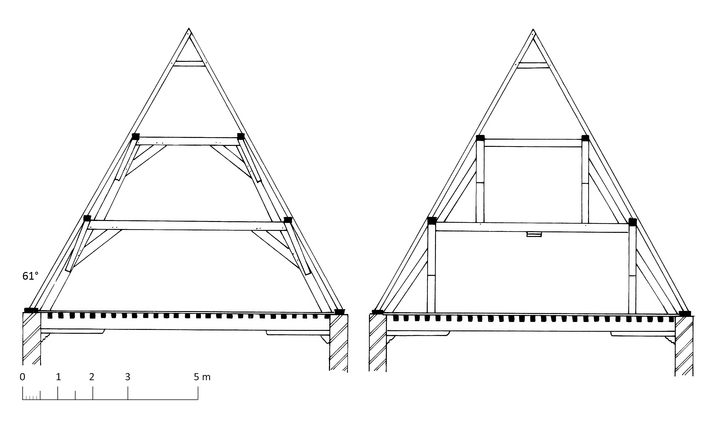
Ook in het zuidelijk deel zijn kamers ingericht, maar hier kon wel een deel van de volledige kap en de ruimte boven de onderste gebinten onderzocht worden. De daksporen hebben een doorsnede van 10 x 10-12 cm en staan hart op hart gemiddeld 36 cm uiteen. De hanenbalken zijn halfhouts verbonden met de sporen en telkens met twee smeedijzeren nagels vastgezet. De daksporen bestaan uit twee stukken. Het deel van de muurplaat tot de onderste fliering is tegen deze fliering opgenageld, terwijl het andere deel met een inkeping op de bovenste fliering rust. De telmerken van de bovenste stukken zijn van zuid naar noord genummerd in twee reeksen, van 1 tot 33 en van 1 tot 7. Voor zover zichtbaar bevinden de onderste stukken zich niet meer in de oorspronkelijke volgorde.
In tegenstelling tot de daksporen zijn de gebinten uitgevoerd in snel gegroeid hout. De daksporen worden geschraagd door dubbele schaargebinten en stijlgebinten tegen de eindgevels. Alle verbindingen zijn van het pen-en-gat-type. De stijlgebinten tegen de zuidgevel zijn zonder korbelen tussen de stijl en de dekbalk maar bevatten wel schoren aan de buitenzijde van de stijlen. De onderste dekbalk rust centraal op een zandstenen console. Van het noordelijk stijlgebinte zijn onderaan de korbelen verdwenen en rusten de flieringen nu op een balksleutel. Bovenaan zijn de stijlen schuin opgesteld; er waren van meet af aan geen korbelen. In tegenstelling tot de sporen zijn de telmerken in de gebinten weinig diep ingekerfd. Ze verlopen van zuid naar noord met een bijteken aan de oostkant.
De verschillen tussen de daksporen en de gebinten zijn opmerkelijk, maar toch is niet duidelijk of deze kap in één dan wel twee bouwfasen is opgetrokken. Slechts twee van de daksporen vertonen een inkaveling voor een tweede hanenbalk, zodat bezwaarlijk kan gesteld worden dat de gebinten later werden ingebracht in een bestaande sporenkap.
Acht boorkernen uit evenveel daksporen leverden groeiringreeksen op die samen één middelcurve vormen, waarvan de meest recente jaarring werd gevormd in 1440d. Bij drie gedateerde boorkernen was nog wankant aanwezig waardoor de veldatum kan worden gesitueerd tussen het najaar van 1440 en het voorjaar van 1441d28.
10.1.16 Wijnzakstraat 2, huis De Croone
Dit grote bakstenen diephuis uit het einde van de 15de eeuw wordt overdekt door een kap met flieringen op schaargebinten29. De dragende gespannen bestaan uit twee gestapelde schaargebinten met flieringen op windschoren. De gespannen zijn boven verstevigd met een kleine hanenbalk. De spantbenen van de onderste schaargebinten steunen op de balklaag van de tweede verdieping, waar de moerbalken worden gesteund door korbelen en muurstijlen.
10.1.17 Wollestraat 53
Dit laatgotische huis, gebouwd door Juan Perez de Malvenda (1511-1606), bestaat uit twee hoofdvleugels, een kleiner dwarsvolume en een poortgebouw30.
De straatvleugel
De sporen hebben een doorsnede van 7 x 11 cm tot 9 x 9 cm en staan hart op hart 32 tot 37 cm uiteen. De hanenbalken vlakbij de nok zijn halfhouts verbonden met de sporen. De zware gebinten omvatten van west (voorgevel) naar oost: een dubbel stijlgebinte tegen de voorgevel, twee dubbele schaargebinten en een dubbel stijlgebinte tegen de achtergevel. De gebeitelde telmerken op de gebinten bevinden zich enkel aan de noordzijde en verlopen van oost naar west. Alle verbindingen zijn van het pen-en-gat-type, uitgezonderd het boveneinde van de bovenste schoren.
De Reievleugel
Deze woonvleugel omvat een voorhuis en een kleiner achterhuis die door een brandmuur van elkaar gescheiden zijn31. De sporen hebben een doorsnede van gemiddeld 10 x 10 cm en staan hart op hart 40 cm uiteen. Zij bestaan uit twee stukken waarvan het onderste deel op de onderste flieringen genageld is. De hanenbalken vlakbij de nok zijn halfhouts met de sporen verbonden. Van west naar oost staan zware gebinten opgesteld: een dubbel stijlgebinte tegen de gevel, drie dubbele schaargebinten, dubbele schaargebinten aan beide zijden van de brandmuur (bakstenen van 22 x 5 cm groot), een dubbel schaargebinte en een dubbel stijlgebinte tegen de Reiegevel. Alle verbindingen zijn van het pen-en-gat-type, behalve de opgenagelde schoren van de bovenste gebinten. De telmerken op de gebinten lopen van oost naar west met een bijteken aan de noordzijde.
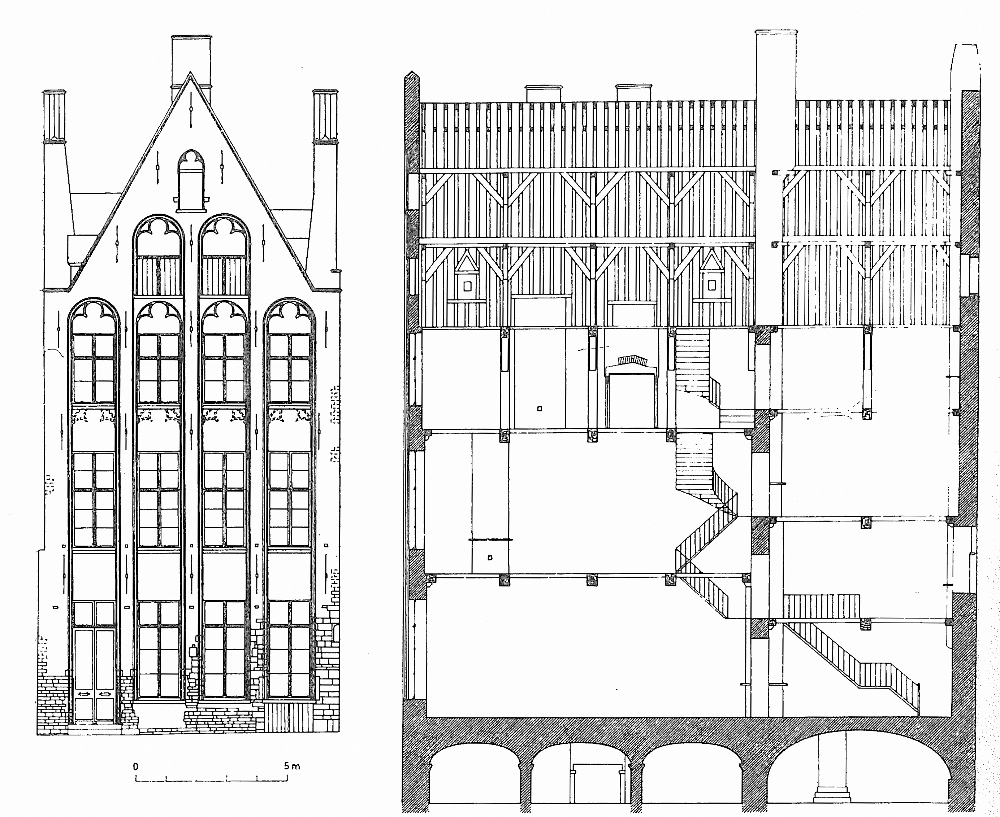
10.1.18 Kuipersstraat 23, breedhuis
Het hoofdgebouw met de bakstenen schermgevel is drie verdiepingen hoog en dateert vermoedelijk uit het einde van de 15de eeuw32. Ten zuiden van het hoofdgebouw bevind zich een jongere en lagere nevenbouw . In dit breedhuis is een oude sporenkap aanwezig met twee dubbele schaargebinten. In tegenstelling tot het hoofdgebouw (zie 10.2.12), waar de sporenparen zijn opgebouwd met twee hanenbalken, hebben de sporenparen in de nevenbouw slechts één hanenbalk.
10.2 Sporenkappen met flieringen op dubbele schaargebinten en met twee hanenbalken
10.2.1 Lissewege, schuur van de abdij Ter Doest
De abdijschuur van Ter Doest meet binnenwerks 56 op 21 meter en bereikt een nokhoogte van 16,5 m33. De noordelijke en zuidelijke dwarsgevel worden geleed door steunberen en hoge spitsboognissen met blind maaswerk. Poorttoegangen bevinden zich in de oostelijke travee van de dwarsgevels en in de oostelijke langsgevel.
De monumentale kapconstructie wordt gedragen door tien spanten waarvan twee tegen de dwarsgevels staan opgesteld34. Achter de stijlen van het onderste gebinte tegen de noordgevel zijn delen van het baksteenmetselwerk weggehakt, een mogelijke aanwijzing dat de huidige dakkap secundair werd ingebracht in een bestaand bakstenen karkas.
Elk spant bestaat uit een 10,45 m hoog stijlgebinte en een schaargebinte. De stijlen van de stijlgebinten hebben een doorsnede van 40 x 40 cm en rusten op korte, dwars geplaatste houten balken die zelf rusten op blokken Doornikse kalksteen. De verbindingen tussen de stijlen en de dekbalken zijn telkens met twee zware korbelen verstevigd. Ook de verbindingen tussen de stijlen en de flieringen op de dekbalken zijn verstevigd met dubbele korbelen. Tussen de twee onderste korbelen is telkens een horizontale balk aangebracht met centraal een kleine stijl die de fliering bijkomend ondersteunt.
De inteugels van de zijbeuken rusten op de muurplaten van de langsgevels. Aan de zijde van de middenbeuk zijn de inteugels ingepend in de grote stijlen van de gebinten. De inteugels worden ondersteund door korbelen, aan de kant van de langsgevels geborgen in korte hangende muurstijlen. Op de inteugels staan stijlen met geschoorde flieringen. Centraal in de traveeën van de zijbeuken ligt een die de voet van de kap verbindt met de stijlgebintenconstructie. De schaargebinten dragen een derde fliering.
Elk sporenpaar rust onderaan op blokkelen en kleine standzonen. Ook op de flieringen ligt telkens een blokkeel dat alleen ter hoogte van de tweede fliering voorzien is van een kleine standzoon. Elk sporenpaar bevat twee hanenbalken. De hoeken van de daksporen en de onderste hanenbalken zijn voorzien van korbelen die in het midden van elk vak vervangen zijn door balken tussen de hanenbalken en de blokkelen op de tweede fliering. Alle verbindingen in de kap zijn van het pen-en-gat type. De spanten zijn afzonderlijk getelmerkt. De sporenparen dragen diverse reeksen telmerken. Er zijn ook vlot- en eigenaarsmerken aanwezig.
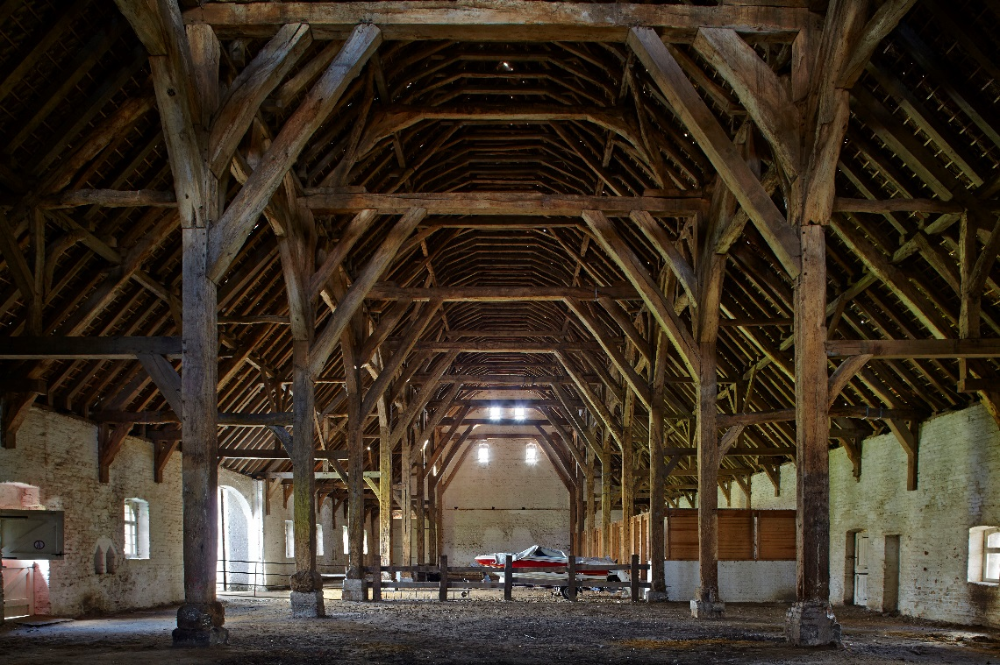

Op basis van de gotische bouwvormen, de baksteenformaten en het Vlaams metselverband wordt de schuur gedateerd omstreeks 1275, hoewel de chronologie van baksteenformaten in en rond Brugge ook een oudere datering in ongeveer 1200-1260 mogelijk maakt35. Recente natuurwetenschappelijke dateringen suggereren evenwel dat de dakkap een secundaire ingreep zou kunnen zijn.
Reeds in 1993 werd een stuk hout uit de dakkap gesneden door Luc Devliegher en door het KIK met de 14C methode gedateerd in 535 ±25 BP (IRPA-1019). Wanneer gekalibreerd volgens de huidige kalibratiecurves en rekentechnieken, komt dit overeen met een datering tussen 1321 en 1348 of tussen 1391 en 1436 (zie Fig. 10.12). Deze datering werd toen aanzien als totaal niet in overeenstemming met de bouwhistorische datering36. Boorkernen genomen door Dirk de Vries van de Rijksdienst voor het Cultureel Erfgoed – waarvan tien voor verder onderzoek werden geselecteerd– bleken dendrochronologisch niet dateerbaar37. Organisch materiaal uit mortel van de noordgevel werd met 14C gedateerd, wat een gekalibreerde datering opleverde tussen 1293 en 1421, een datering die nog net aansluit op de toen gangbare datering omstreeks 127538. Tijdens dezelfde dateringscampagne werd ook een mortelstaal uit de westgevel genomen voor een 14C analyse, wat resulteerde in ongeloofwaardige dateringen, tussen 942 en 958 of tussen 985 en 1121.
Tijdens de restauratie van de schuur in 2002 werd de dakkap opnieuw onderworpen aan een dendrochronologisch onderzoek. Het Laboratoire de Dendrochronologie (Université de Liège) dateerde de veldatum van het eikenhout tussen 1370 en 1385d. Simultaan dendrochronologisch onderzoek door Kristof Haneca (Universiteit Gent, heden Onroerend Erfgoed) kwam tot een vergelijkbare laat 14de-eeuwse datering, met een veldatum van het hout tussen 1365 en 1370d39. Deze datering sluit dus aan bij de eerder uitgevoerde 14C datering op een stukje hout uit de dakkap.
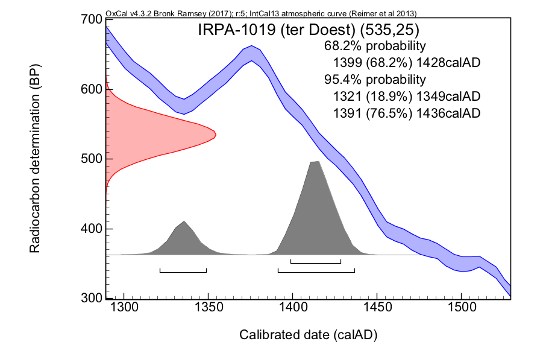
De conclusie is dat de kapconstructie waarschijnlijk niet oorspronkelijk is maar pas in de tweede helft van de 14de eeuw in de reeds bestaande schuur werd ingebracht.
10.2.2 Vlamingstraat 11, huis De Munte
Zoals blijkt uit de kelder met bakstenen kruisribgewelven onder het voorhuis klimt de oorsprong van dit diephuis op tot de 13de of 14de eeuw40. In zijn huidige vorm is het huis echter voornamelijk een gebouw uit de late 15de eeuw toen de bestaande maar grotendeels vernieuwde gotische gevel in natuursteen werd opgetrokken. De dakkap boven het voorhuis is maar gedeeltelijk bewaard. De daksporen van deze sporenkap op gestapelde gebinten hebben een doorsnede van 9-10 x 12-13 cm. De kap wordt gedragen door schaargebinten en stijlgebinten tegen de voorgevel. De onderste gebinten zijn merkbaar zwaarder uitgevoerd dan de bovenste gebinten.
10.2.3 Oude Burg 3
Dit in 1964 gesloopte huis had een schermgevel uit de 15de eeuw, was drie traveeën diep en bezat een houtskelet met balklagen en dakkap41. De kap werd ondersteund door kromstijl- en schaargebinten en stijlgebinten tegen de gevels. Uit de merken en inkavelingen in de bovenste flieringen blijkt dat de kap oorspronkelijk tegen de schermgevel eindigde. De daksporen bestonden uit twee delen, met de las ter hoogte van de onderste flieringen.
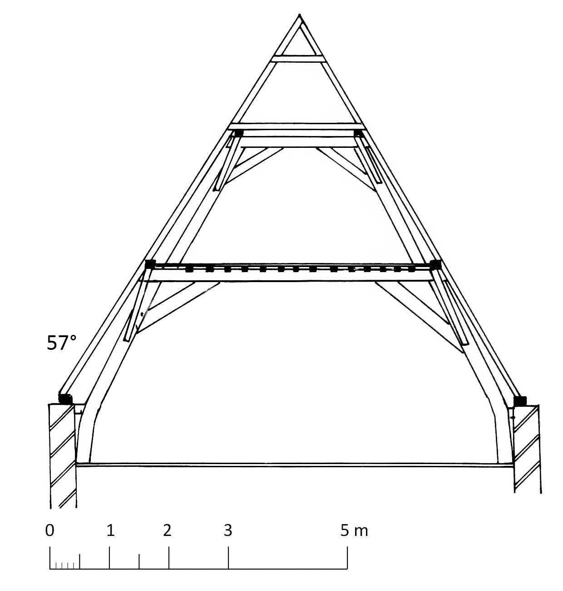
10.2.4 Philipstockstraat 19, huis De Vliegenden Duivel
Het hoekpand dateert oorspronkelijk uit de 13de eeuw maar werd grotendeels herbouwd in de 15de of 16de eeuw42. De kapconstructie uit deze periode rust nu op vijf schaargebinten en een stijlgebinte tegen de achtergevel. Het vermoedelijke stijlgebinte bij de voorgevel verdween allicht in 1699, toen de houten straatgevel werd vervangen door de huidige bakstenen gevel. Elk sporenpaar is voorzien van twee halfhouts verbonden hanenbalken. Bij de gebinten zijn de korbelen en de onderkant van de schoren vastgezet met een pen-en-gat verbinding terwijl de bovenkant van de schoren is opgenageld. De telmerken op deze gebinten zijn een ongebruikelijk systeem van strepen, cirkels en halve cirkels. Het is niet duidelijk of deze telmerken zich nog in de juiste volgorde bevinden. Mogelijk zijn de gebinten tijdens een verbouwing ontmanteld en nadien opnieuw samengesteld.
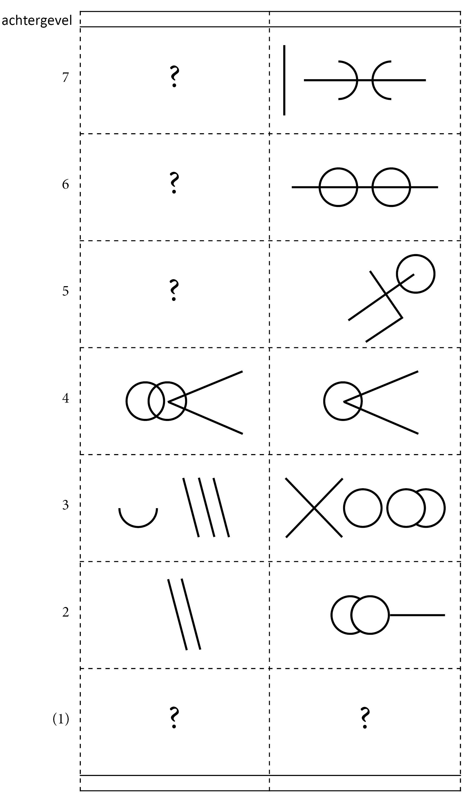
De telmerken op de daksporen bevinden zich niet meer in de juiste volgorde, wat wijst op een verbouwing waarbij waarschijnlijk bijkomende flieringen onder de onderste hanenbalken werden aangebracht. De flieringen worden ondersteund door lichte schaargebinten waarin nagenoeg alle verbindingen zijn opgenageld. De gestapelde schaargebinten zijn dus waarschijnlijk niet de originele opstelling, maar kwamen in twee bouwfasen tot stand.
10.2.5 Geldmuntstraat 26
Dit waarschijnlijk omstreeks 1400 gebouwde diephuis wordt door twee brandmuren verdeeld in een voorhuis, middenhuis en achterhuis43. De sporenkap wordt geschraagd door flieringbalken op schaar- en stijlgebinten. In het voorhuis bestaat de draagconstructie uit twee schaargebinten en stijlgebinten tegen de voorgevel en de brandmuur. In het middenhuis zijn er alleen stijlgebinten tegen de brandmuren. De dakkap van het achterhuis omvat een enkel schaargebinte en stijlgebinten tegen de brandmuur en de achtergevel. In al deze gebinten zijn de verbindingen van het pen-en-gat type.
De verbindingen tussen de daksporen en de twee hanenbalken zijn halfhouts. In het voorhuis zijn diagonaal geplaatste windlatten tegen de voorgevel aanwezig. De telmerken op de daksporen en de hanenbalken zijn aangebracht van voor naar achter. In het achterhuis verlopen de telmerken in omgekeerde volgorde. De gebinten hebben een eigen nummering van straat- naar achtergevel.
Bij een verbouwing omstreeks 1500 werd een nieuwe straatgevel opgetrokken met vensternissen met een kraalprofiel in de omlijsting en driepassen in de boogvelden. Waarschijnlijk werd de toenmalige dakkap aangepast tijdens deze verbouwing. Bovenop de oorspronkelijke gebinten werd een vlieringzolder aangebracht terwijl onder de onderste hanenbalken bijkomende flieringen op lichte schaargebinten werden opgesteld. Bij deze gebinten zonder telmerken zijn alle verbindingen opgenageld.
10.2.6 Oude Burg 11, huis De Tassche
Het hoekpand is in oorsprong een groot huis uit het begin van de 14de eeuw dat echter in de 15de of 16de eeuw werd heropgebouwd44. In 1718 werd de houten uitkragende gevel, nog afgebeeld op de kaart van Marcus Gerards (1562), vervangen door de huidige bakstenen gevel. Het diephuis was door een nu verdwenen brandmuur verdeeld in een rechthoekig voorhuis en een kleiner, in grondplan bijna vierkant achterhuis. In de kapconstructie kunnen duidelijk twee bouwfasen worden onderscheiden.
De dakkap van het huis wordt geschraagd door eikenhouten gebinten met verbindingen van het pen-en-gat type: twee schaargebinten in het voorhuis, stijlgebinten aan beide zijden van de brandmuur waarvan slechts een bewaard bleef, een enkel schaargebinte in het achterhuis en een (verdwenen) stijlgebinte tegen de achtergevel.
De telmerken bevinden zich op de gebinten en de flieringen ter hoogte van de schoren. De telmerkenreeks is onvolledig, wat suggereert dat de kap niet bewaard is in de oorspronkelijke opstelling maar ooit werd verplaatst. Mogelijk behoren de gebinten en de flieringen tot een van de oudste bouwfasen van het huis.
Op de eikenhouten gebinten werd in een latere fase een sporenkap in naaldhout opgericht, bestaande uit de bovenste gebinten en bijhorende flieringen, daksporen en hanenbalken. In dit deel van de dakkap zijn alle verbindingen opgenageld. De verbindingen tussen de daksporen en de hanenbalken zijn halfhouts. De daksporen hebben een doorsnede van 6 x 6 cm en staan hart op hart gemiddeld 30 cm uiteen. Enkele hanenbalken met telmerken zijn wellicht hergebruikte onderdelen.
10.2.7 Sint-Jorisstraat 15
Dit hoekpand is het voornaamste bouwvolume in een geheel van vijf laatmiddeleeuwse diephuizen (Sint-Jorisstraat 9-15), gelegen op een groot domein met nog andere bijgebouwen45. Het is het enige van de vijf huizen met een oorspronkelijke dakkap.
Een op zolderniveau brandmuur verdeelde het pand in een groot voorhuis en een kleiner achterhuis. In het voorhuis bestaat de eikenhouten sporenkap uit drie schaargebinten en stijlgebinten tegen de voorgevel en de brandmuur. In het achterhuis bestaat de deels verbouwde kap uit een schaargebinte en een stijlgebinte tegen de (verdwenen) achtermuur. Bij de onderste zware gebinten zijn alle verbindingen van het pen-en-gat type, behalve de toppen van de schoren die op de flieringen zijn opgenageld. In de lichter uitgevoerde bovenste gebinten zijn alle verbindingen opgenageld. De daksporen hebben een vierkante sectie. Elk sporenpaar is verbonden door twee halfhouts vergaarde hanenbalken.
10.2.8 Dijver 17, huis van de Heren van Gruuthuse
De voormalige patriciërswoning van de heren van Gruuthuse is een grotendeels 15de-eeuws gebouwencomplex, op het einde van de 19de eeuw gerestaureerd door stadsarchitect Louis Delacenserie (1838-1909)46.
Vleugel tussen hoofd- en Reievleugel
In het complex bleef slechts één laatmiddeleeuwse sporenkap integraal bewaard, namelijk in de kleine vleugel ten zuiden van de traptoren in de oksel van de hoofd- en de Reievleugel. De sporenkap wordt gedragen door twee gestapelde schaargebinten. Tegen de gevels stonden waarschijnlijk stijlgebinten waarvan enkel de dekbalken bewaard zijn. Alle verbindingen in de gebinten zijn van het pen-en-gat type. De hanenbalken zijn halfhouts verbonden met de daksporen. De onderste hanenbalken rusten op de bovenste flieringbalken. De gebinten, daksporen en hanenbalken dragen getrokken telmerken. Enkele daksporen zijn vervangen, maar de telmerken op de oorspronkelijke sporen en hanenbalken bevinden zich nog in de juiste volgorde, lopend van oost naar west. Deze vleugel van het complex wordt omstreeks 1425 gedateerd.
Hoofdvleugel
Wellicht iets jonger zijn de twee kapconstructies boven de zuidelijke hoofdvleugel. Delacenserie verving hier weliswaar alle daksporen en plaatste nokgebinten en nokstijlen, maar de onderliggende gestapelde schaargebinten dateren waarschijnlijk nog uit het derde kwart van de 15de eeuw. De gebinten dragen getrokken telmerken, soms met een bijkomend teken. Nagenoeg alle verbindingen zijn van het pen-en-gat type. Zowel in de middenvleugel als in de westvleugel zijn de gebinten tegen de gevels verdwenen.
In de hier besproken kapconstructies werden door Delacenserie vlieringzolders ingericht door de opleg van kinderbalken op de dekbalken van de onderste schaargebinten.
10.2.9 Burg 11, landhuis van het Brugse Vrije, oude schepenkamer
In 1434-1440 liet het kasselrijbestuur van het Brugse Vrije ten zuiden van de grafelijke Love nieuwe gebouwen optrekken, waaronder de schepenkamer47. In 1954-1956 werd de schepenkamer inwendig zwaar verbouwd, maar de balklagen en de kapconstructie zijn nog 15de-eeuws48.
De kap telde oorspronkelijk vijf spanten – het spant tegen de noordgevel is verdwenen. Aan de zuidkant bestaat het spant uit gestapelde stijlgebinten, de overige drie spanten bestaan uit gestapelde schaargebinten. De telmerken zijn van noord naar zuid aangebracht met een bijteken aan de westkant. Alle verbindingen zijn van het pen-en-gat type. De sporen hebben een doorsnede van 10 x 8 cm en staan hart op hart gemiddeld 30 cm uiteen. Elk sporenpaar telt twee hanenbalken waarvan de onderste rust op de bovenste flieringen49.
10.2.10 Hoogstraat 25, huis De Biekorf, nadien De Kroon
De huidige dakkap is duidelijk jonger dan het oorspronkelijke huis (zie 12.6) en dateert uit de 15de tot 16de eeuw50. Afgezien van de oudere hergebruikte sporen bestaan de veertien sporenparen hoofdzakelijk uit naaldhoutstammetjes van 9 x 9 tot 11 x 11 cm die hart op hart 40 tot 60 cm uiteen staan. Elk sporenpaar is voorzien van twee halfhouts opgenagelde hanenbalken. Tegen de oostelijke zijgevel staan gestapelde stijlgebinten terwijl de huidige scheidingsmuur met het pand Ridderstraat 21 gestapelde schaargebinten bevat. De verbindingen tussen de stijlen, dekbalken en korbelen is telkens van het pen-en-gat type. De schoren zijn opgenageld. Bij de onderste gebinten is de dekbalk halfhouts verbonden met de daksporen. Het hout in deze gebinten is ten dele hergebruikt.
10.2.11 Sint-Janshospitaal, zusterklooster, zuidwestelijke vleugel
De 57 sporenparen van de kap zijn opgebouwd met sporen met een sectie van 11 x 11 cm en hart op hart 36 tot 40 cm uiteen staan51. De daksporen bestaan uit twee delen waarvan het onderste deel tegen de onderste fliering is opgenageld. Hier bevinden zich telmerken die van west naar oost zijn aangebracht. Aan de zuidzijde is de reeks nagenoeg volledig, aan de noordzijde daarentegen zijn veel houtstukken vervangen. Het eerste sporenpaar is niet getelmerkt. Tegen de eindgevels zijn aan de binnenzijde van de sporen windlatten aangebracht. De windlatten bestaan uit twee delen: het bovenste deel van geveltop naar bovenste fliering, het onderste deel tussen de bovenste en onderste fliering. Elk sporenpaar is voorzien van twee halfhouts verbonden en getelmerkte hanenbalken. Een groot aantal van de onderste hanenbalken zijn hergebruikte daksporen, zoals blijkt uit de open pengaten voor hanenbalken.
Van west naar oost omvat de kap een dubbel stijlgebinte tegen de gevel, vijf dubbele schaargebinten en een dubbel stijlgebinte tegen de eindgevel. De gebinten bestaan uit houtstukken met een zware sectie zijn genummerd van west naar oost met bijteken aan de noordzijde. De flieringen en bijgaande schoren dragen een eigen doorlopende nummering van 1 tot 12 met bijteken aan de noordzijde. Alle verbindingen zijn van het pen-en-gat type. De dakhelling bedraagt 57°.
Deze vleugel, reeds afgebeeld op de stadskaart van Marcus Gerards uit 1562, werd wellicht gebouwd kort na de oprichting van de oudste, oostelijke vleugel uit 1539-1540. De kapconstructie kan daarom tussen 1540 en 1562 worden gedateerd.
10.2.12 Kuipersstraat 23, diephuis
Het diephuis met de hoge bakstenen schermgevel dateert vermoedelijk uit het einde van de 15de eeuw52. Ten zuiden bevind zich een jonger en lager breedhuis (zie 10.1.18). De dakkap van het diephuis is opgebouwd met zeven dubbele schaargebinten en sporenparen met twee hanenbalken. In het aanpalende breedhuis hebben de sporenparen slechts één hanenbalk.
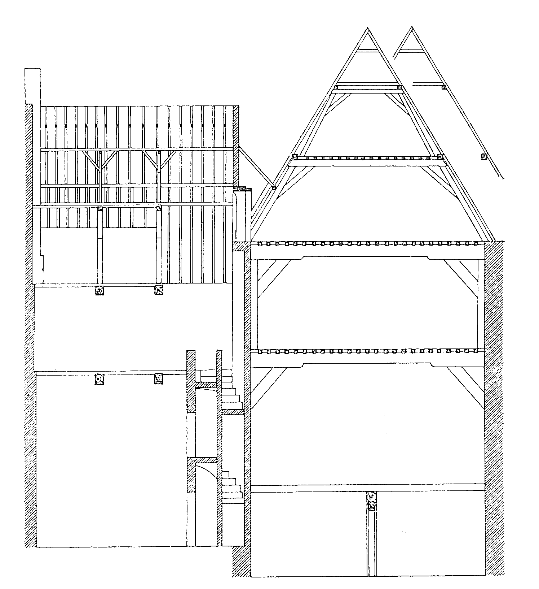
10.2.13 Sint-Jakobsstraat 64, huis Het Schietspel
Opvallend in de sporenkap van dit diephuis is het knoestige hout en de ruw of niet gekantrechte sporen53. De sporen hebben een sectie van 8 x 8 tot 10 x 10 cm en staan hart op hart 36 tot 44 cm uiteen. Zij zijn in twee stukken uitgevoerd, waarbij het onderste gedeelte tegen de onderste fliering is opgenageld. Ter hoogte van de gebinten zijn de sporen in de dekbalk ingelaten en met een houten toognagel vastgezet. De muurplaat ligt op een 1,1 m hoge borstwering. De westelijke borstwering verdween bij de uitbreiding van het huis over een brandstraatje. De hanenbalken zijn halfhouts verbonden met de sporen en telkens met twee smeedijzeren nagels vastgezet. De onderste hanenbalken liggen op de onderste flieringen.
De dakkap werd oorspronkelijk van zuid (achtergevel) naar noord geschraagd door een stijlgebinte, een schaargebinte, opnieuw een stijlgebinte, een schaargebinte en ten slotte een stijlgebinte dat verdween bij de sloop van de oorspronkelijke uitkragende houten gevel. De jaarankers in de bakstenen bovenbouw van de huidige gevel dateren deze verbouwing in 1674. Door de afwisseling van schaar- en stijlgebinten staan de spantbenen van de gebinten niet op één lijn: de spantbenen van de stijlgebinten staan meer naar binnen.
De getrokken telmerken op de dekbalken en de binnenzijde van de stijlen verlopen van zuid naar noord met een bijteken aan de westzijde. Op de zijkanten van de stijlen en de onderkant van de flieringen is een afzonderlijke doorlopende nummering van 1 tot 8 aangebracht, met bijteken aan de westzijde. De stijlen zijn met een blokkeel in de borstwering verankerd. Alle verbindingen zijn van het pen-en-gat type. In de dekbalk van het middelste stijlgebinte zijn de inkavelingen zichtbaar van een stijlwand die het onderste deel van de zolder in twee kamers verdeelde. Op de dekbalken van de gebinten liggen de kinderbalken van een vlieringzolder.

Ter hoogte van de vlieringzolder wordt de kap van zuid naar noord geschraagd door een stijlgebinte tegen de achtergevel, drie schaargebinten en een verdwenen gebinte bij de voorgevel. Alle verbindingen zijn van het pen-en-gat type, behalve de schoren die boven- en onderaan zijn opgenageld. De getrokken telmerken op de dekbalken en de stijlen verlopen van zuid naar noord met een bijteken op westkant.
Van de vijf boorkernen voor dendrochronologisch onderzoek leverde slechts één staal een einddatering, in 1413d. Na toevoeging van het aantal ontbrekende spintringen kan de veldatum gesitueerd worden tussen 1413 en 1428d54.
10.2.14 Gouden-Handstraat 17
Dit monumentale huis omvat een westelijke diephuis en een oostelijk breedhuis55. Het diephuis is door een bakstenen dwarsmuur (formaat 20 x 5 cm) verdeeld in een voorhuis en een kleiner achterhuis. De bestaande sporenkap kwam in twee bouwfasen tot stand.
Tot de eerste fase behoren de onderste gebinten in mooi gekantrecht hout. Van zuid (straatgevel) naar noord staan opgesteld: een stijlgebinte, drie schaargebinten, twee stijlgebinten aan beide zijden van de dwarsmuur, twee schaargebinten en waarschijnlijk een stijlgebinte dat verdween bij de uitbreiding van het diephuis. Alle verbindingen zijn van het pen-en-gat type. De telmerken zijn aangebracht van zuid naar noord.
In de tweede fase werden (enkel) op de bestaande schaargebinten bijkomende schaargebinten geplaatst en werden alle daksporen vernieuwd. Het hout van de tweede bouwfase is veel lichter en ruwer afgewerkt dan in de eerste bouwfase. De sporen hebben gevarieerde secties (gemiddeld 8 x 8 cm) en staan hart op hart gemiddeld 40 cm uiteen. De twee bewaarde hanenbalken zijn halfhouts op de daksporen genageld. Ook de verbindingen in de toegevoegde gebinten zijn opgenageld. De onderste hanenbalken rustten op de flieringen van de bovenste gebinten.
Tijdens een derde bouwfase werden nagenoeg alle hanenbalken verwijderd en werden gordingen, schoren, kleine nokstijlgebinten en een nokbalk ingebracht.
10.2.15 Langerei 1
De kap van dit huis bestaat uit grotendeels hergebruikte onderdelen, zowel in eiken- als naaldhout56. De sporen hebben een doorsnede van gemiddeld 10 x 10 cm en staan hart op hart 36 tot 38 cm uiteen. De twee hanenbalken zijn halfhouts verbonden met de daksporen en telkens met twee ijzeren nagels vastgezet. De telmerken bevinden zich niet meer in de juiste volgorde. Tegen de achtergevel zijn schuine windlatten ingelaten op de binnenzijde van de sporen.
De drie dubbele schaargebinten van de dakkap staan op evenveel moerbalken met zware korbeelstellen. Alle verbindingen in de gebinten zijn opgenageld. De onderste gebinten hebben een grotere sectie dan de bovenste. Centraal op de dekbalk van de onderste gebinten ligt een derde fliering. De drie flieringen dragen de dwarse balkjes van een vlieringzolder57. Er zijn geen gebinten tegen de eindgevels.
Het Sint-Janshospitaal in de inventaris van het bouwkundig erfgoed: https://inventaris.onroerenderfgoed.be/erfgoedobjecten/78704.↩︎
Wat wel door Janse en Devliegher wordt gesuggereerd (Janse & Devliegher 1962, 355).↩︎
Eeckhout & Houbrechts 2002, 84-86.↩︎
Devliegher 1975², 418-420. Huis Ter Buerse in de inventaris van het bouwkundig erfgoed: https://inventaris.onroerenderfgoed.be/erfgoedobjecten/29897.↩︎
De Sint-Jakobskerk in de inventaris van het bouwkundig erfgoed: https://inventaris.onroerenderfgoed.be/erfgoedobjecten/29659.↩︎
Van der Hoeve 2014, 8-13.↩︎
Idem, 14-18.↩︎
Het Tolhuis in de inventaris van het bouwkundig erfgoed: https://inventaris.onroerenderfgoed.be/erfgoedobjecten/29359.↩︎
Voor een overzicht van de bouwgeschiedenis: Van Eenhooge 2006.↩︎
Eeckhout & Houbrechts 2002, 13-17.↩︎
Ibidem.↩︎
Van Eenhooge 2009, 40-42. De Onze-Lieve-Vrouwekerk in de inventaris van het bouwkundig erfgoed: https://inventaris.onroerenderfgoed.be/erfgoedobjecten/82359.↩︎
Eeckhout & Galand 2005, 6.↩︎
Devliegher 1975², 281-285. Het huis Adornes in de inventaris van het bouwkundig erfgoed: https://inventaris.onroerenderfgoed.be/erfgoedobjecten/83393.↩︎
Haneca 2014f.↩︎
Devliegher 1975², 282.↩︎
Huis Den Bonten Hont in de inventaris van het bouwkundig erfgoed: https://inventaris.onroerenderfgoed.be/erfgoedobjecten/83008.↩︎
Simon Stevinplein 11 in de inventaris van het bouwkundig erfgoed: https://inventaris.onroerenderfgoed.be/erfgoedobjecten/29628.↩︎
Eeckhout & Houbrechts 2002, 64.↩︎
Twijnstraat 6-8 in de inventaris van het bouwkundig erfgoed: https://inventaris.onroerenderfgoed.be/erfgoedobjecten/29849.↩︎
Devliegher 1975², 397.↩︎
Grauwwerkersstraat 6 in de inventaris van het bouwkundig erfgoed: https://inventaris.onroerenderfgoed.be/erfgoedobjecten/29317.↩︎
De Sint-Salvatorskathedraal in de inventaris van het bouwkundig erfgoed: https://inventaris.onroerenderfgoed.be/erfgoedobjecten/29716.↩︎
Devliegher 1981, 120, fig. 56.↩︎
Devliegher 1975, 33. Huis De Candelaer in de inventaris van het bouwkundig erfgoed: https://inventaris.onroerenderfgoed.be/erfgoedobjecten/29224↩︎
Idem 1975², 237-242. Het Hof Bladelin in de inventaris van het bouwkundig erfgoed: https://inventaris.onroerenderfgoed.be/erfgoedobjecten/29518.↩︎
Zie opmetingstekening in Idem, 241.↩︎
Haneca 2014g.↩︎
Devliegher 1975, 440-444. Huis De Croone in de inventaris van het bouwkundig erfgoed: https://inventaris.onroerenderfgoed.be/erfgoedobjecten/29932.↩︎
Devliegher 1975², 453 (grondplan). Wollestraat 53 in de inventaris van het bouwkundig erfgoed: https://inventaris.onroerenderfgoed.be/erfgoedobjecten/29966.↩︎
Voor een opstand van de kap: Idem, fig. 661.↩︎
Devliegher 1975, 189-191. Kuipersstraat 23 in de inventaris van het bouwkundig erfgoed: https://inventaris.onroerenderfgoed.be/erfgoedobjecten/29434.↩︎
Nuytten 2005; Hoffsummer 2009, 196-199. De abdijschuur van Ter Doest in de inventaris van het bouwkundig erfgoed: https://inventaris.onroerenderfgoed.be/erfgoedobjecten/79819.↩︎
Opstanden van de kap van de schuur in: Janse & Devliegher 1962, 348-349; Nuytten 2005.↩︎
Devliegher 1957, 250; de Vries 2000; Debonne 2015, vol. 1, 235, 260, 280-281.↩︎
Van Strydonck 1994.↩︎
de Vries 2000, 76.↩︎
Ibidem.↩︎
Haneca 2005, 128.↩︎
Huis De Munte in de inventaris van het bouwkundig erfgoed: https://inventaris.onroerenderfgoed.be/erfgoedobjecten/29883.↩︎
Janse & Devliegher 1962, 356, afb. 76; Devliegher 1975², 262-263, fig. 382.↩︎
Huis De Vliegenden Duivel in de inventaris van het bouwkundig erfgoed: https://inventaris.onroerenderfgoed.be/erfgoedobjecten/29594.↩︎
Geldmuntstraat 26 in de inventaris van het bouwkundig erfgoed: https://inventaris.onroerenderfgoed.be/erfgoedobjecten/29281.↩︎
Huis De Tassche in de inventaris van het bouwkundig erfgoed: https://inventaris.onroerenderfgoed.be/erfgoedobjecten/29566.↩︎
Sint-Jorisstraat 15 in de inventaris van het bouwkundig erfgoed: https://inventaris.onroerenderfgoed.be/erfgoedobjecten/82793.↩︎
Voor een beschrijving en bouwgeschiedenis: Gilté & Vanwalleghem 2004a, 310-318. Het huis van de Heren van Gruuthuse in de inventaris van het bouwkundig erfgoed: https://inventaris.onroerenderfgoed.be/erfgoedobjecten/82344.↩︎
Het landhuis van het Brugse Vrije in de inventaris van het bouwkundig erfgoed: https://inventaris.onroerenderfgoed.be/erfgoedobjecten/29236.↩︎
Devliegher 1987, afbn. 3, 22.↩︎
Herman Janse en Luc Devliegher beelden de kap af met slechts één hanenbalk (Janse & Devliegher 1962, 356).↩︎
Huis De Biekorf in de inventaris van het bouwkundig erfgoed: https://inventaris.onroerenderfgoed.be/erfgoedobjecten/29348.↩︎
Voor een beschrijving en overzicht van de bouwgeschiedenis: Gilté & Vanwalleghem 2004a, 352-356. Het zusterklooster in de inventaris van het bouwkundig erfgoed: https://inventaris.onroerenderfgoed.be/erfgoedobjecten/82412.↩︎
Devliegher 1975, 189-191. Kuipersstraat 23 in de inventaris van het bouwkundig erfgoed: https://inventaris.onroerenderfgoed.be/erfgoedobjecten/29434.↩︎
Gilté & Vanwalleghem 2004b, 315. Huis Het Schietspel in de inventaris van het bouwkundig erfgoed: https://inventaris.onroerenderfgoed.be/erfgoedobjecten/29685.↩︎
Haneca 2014h.↩︎
Gouden-Handstraat 17 in de inventaris van het bouwkundig erfgoed: https://inventaris.onroerenderfgoed.be/erfgoedobjecten/82909.↩︎
Langerei 1 in de inventaris van het bouwkundig erfgoed: https://inventaris.onroerenderfgoed.be/erfgoedobjecten/82961.↩︎
Jan Esther aanzag deze onterecht als een derde hanenbalk (Esther 1998, 65).↩︎